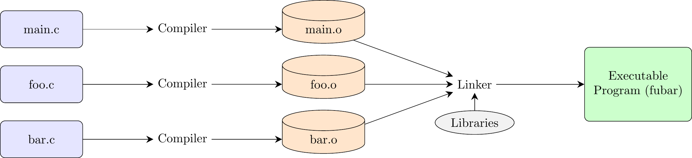

1. Introduction to Programming and C, Compilation, Memory
1. Summary
1.1 What is Programming?
Programming is the fundamental skill in computer science. It involves writing instructions for a computer to execute. A professional programmer should not only know several languages but also be able to quickly learn new ones. This is possible by understanding the basic concepts that are common to nearly all programming languages, such as:
- Data types
- Algorithms and control flow
- Expressions and statements
- Syntax and semantics
1.2 Fundamental Concepts
- Variable, Constant, Value: A variable is a named storage location that holds a value, which can change during program execution. A constant is a named storage location whose value cannot be changed after it is initialized.
- Operators and Assignment: Operators are symbols that perform operations on values (e.g.,
+,-,*,/). The assignment operator (=) is used to store a value in a variable. - Data Structures: These are ways of organizing and storing data. Simple examples include arrays, lists, stacks, and queues.
- Programming Paradigms: This refers to the style or “way” of programming. Common paradigms include:
- Imperative: Describes computation as a series of statements that change a program’s state (e.g., C).
- Object-Oriented (OOP): Organizes code around “objects,” which bundle data and the methods that operate on that data (e.g., Java, C++).
- Functional: Treats computation as the evaluation of mathematical functions and avoids changing state and mutable data (e.g., Lisp, Haskell, and features in modern C++).
1.3 Introduction to the C Language
Created by Dennis Ritchie and Brian Kernighan, C is a powerful and influential language.
- Middle-Level Language: It provides a level of abstraction above assembly language but is still close enough to the hardware to allow for fine-grained control over memory and system resources.
- Unsafe by Design: C prioritizes performance and control over safety. It leaves memory management (allocating and freeing memory) and bounds-checking entirely up to the programmer, which is a common source of bugs.
- Assumes Compilation: C source code must be translated into machine instructions by a compiler before it can be run by the computer’s processor.
1.4 Building a C Program: Compilation and Linking
A C program is built in two main stages:
- Compilation: A compiler (such as GCC, the GNU Compiler Collection) takes a human-readable source file (e.g.,
program.c) and translates it into a machine-readable object file (e.g.,program.o). Each source file is compiled independently of others. - Linking: A linker takes one or more object files and combines them with any necessary code from libraries (like the standard I/O library) to produce a single, final executable file.
The diagram below illustrates this process for a program split into multiple files:
1.5 The C Program Structure
- Preprocessor Directives: These are commands that are processed before the actual compilation begins. The most common is
#include <stdio.h>, which tells the preprocessor to include the contents of the standard input/output header file. - The
mainFunction: Every C program must have amainfunction. It is the entry point of the program—execution always begins here. - Functions: All program logic and functionality are organized into functions.
- Variables:
- Global Variables: Declared outside of any function. They are accessible from any function in the program.
- Local Variables: Declared inside a function or a block. They are only accessible within that function or block.
- Function Parameters: Variables used to pass information into a function. They behave like local variables.
1.6 The Common Memory Model
When a C program runs, the operating system allocates a virtual address space for it, which is typically divided into four main regions:
- Code (or Text) Segment: This is where the compiled machine instructions of the program are stored. This region is read-only to prevent the program from accidentally modifying its own instructions.
- Static/Global Data Segment: This segment stores global variables, static variables, and string literals. These variables exist for the entire duration of the program’s execution.
- Heap: This region is used for dynamic memory allocation. The programmer can request blocks of memory from the heap during runtime (e.g., using
malloc) and must explicitly free them when they are no longer needed. The heap typically grows upwards in memory address. - Stack: This region is used to manage function calls. It stores local variables, function parameters, and return addresses. The stack operates in a Last-In, First-Out (LIFO) manner and grows downwards in memory address.
1.7 How the Stack Works
The stack is fundamental to controlling the flow of program execution.
- When a function is called, a new Stack Frame (also called an Activation Record) is pushed onto the top of the stack.
- This stack frame contains all the necessary information for that function call, including its parameters, local variables, and the return address (where execution should resume after the function finishes).
- If that function calls another function, a new stack frame for the new function is pushed on top of the previous one.
- When a function finishes and returns, its stack frame is popped off the stack, and its local variables are destroyed. Execution jumps back to the return address stored in the now-exposed stack frame below.
1.8 Scope and Blocks
- Scope refers to the portion of the source code where a variable is “visible” and can be accessed.
- A Block is a section of code enclosed in curly braces (
{...}). In C, blocks are the primary mechanism for defining scope. - A variable declared inside a block is local to that block and is only visible from the point of its declaration to the end of the block.
- Variable Hiding: If you declare a variable in an inner block with the same name as a variable in an outer block, the inner variable “hides” the outer one. Within the inner block, any reference to that name will refer to the inner variable.
1.9 Storage Class Specifiers
Storage class specifiers in C determine a variable’s lifetime (how long it exists) and visibility (scope).
auto: This is the default specifier for local variables. Anautovariable is created on the stack when its block is entered and is destroyed when the block is exited. Its value is not retained between function calls.static:- When used with a local variable, it changes the variable’s lifetime. A
staticlocal variable is stored in the static data segment, not the stack. It is created only once (when the program starts) and exists for the entire program duration. Its value is preserved between function calls. - When used with a global variable, it restricts the variable’s visibility to only the file in which it is declared.
- When used with a local variable, it changes the variable’s lifetime. A
extern: This is a declaration, not a definition. It tells the compiler that a variable is defined in another source file. It acts as a placeholder that the linker will resolve later by finding the actual variable definition.
2. Definitions
- Compiler: A program that translates source code from a high-level programming language (like C) to a lower-level language (like machine code) that the computer can execute.
- Linker: A program that takes one or more object files generated by a compiler and combines them into a single executable program.
- Scope: The region of a program’s source code in which a declared variable is visible and can be accessed.
- Stack: A region of memory that stores temporary variables and control data for function calls. It operates in a Last-In, First-Out (LIFO) manner.
- Heap: A region of memory used for dynamic memory allocation, where the programmer has direct control over creating and destroying data during runtime.
- Static Memory: A region of memory where global and static variables are stored. These variables exist for the entire lifetime of the program.
- Programming Paradigm: A fundamental style of programming, such as imperative, functional, or object-oriented, which dictates how programs are structured and executed.
- Syntax: The set of rules that defines the combinations of symbols that are considered to be correctly structured programs in a language. For example,
int x = 10;is syntactically correct C. - Semantics: The meaning of the language’s constructs. Static semantics are checked at compile-time (e.g., trying to assign a string to an integer variable), while dynamic semantics define the program’s behavior at runtime.
3. Mistakes
- Confusing Syntax with Semantics: Assuming that because code compiles without errors (correct syntax), it is logically correct (correct semantics). Why it’s wrong: A program can be syntactically perfect but contain logical flaws or undefined behavior that the compiler cannot detect, leading to runtime errors or incorrect results.
- Ignoring Compiler Warnings: Compiling code and running it despite the compiler issuing warnings. Why it’s wrong: Warnings often indicate potential bugs or non-standard behavior that could cause the program to fail under certain conditions. For instance, using a variable before it has been initialized is a common warning that leads to unpredictable behavior.
- Forgetting
&inscanf: Writingscanf("%d", n);instead ofscanf("%d", &n);. Why it’s wrong: Thescanffunction needs the memory address where it should store the input value. The expressionnevaluates to the value of the variable, whereas&nevaluates to its address. Providing the value instead of the address causesscanfto write to an unpredictable memory location, often leading to a program crash. - Using a Variable Outside Its Scope: Declaring a variable inside a loop (e.g.,
for (int i=0;...)) and then trying to accessiafter the loop has finished. Why it’s wrong: A variable’s lifetime is tied to its scope. Once program execution leaves the block ({...}) where the variable was declared, the variable is destroyed and its memory is reclaimed. Attempting to access it results in a compile-time error. - Returning a Pointer to a Local Variable: Writing a function that creates a local variable and returns its memory address. Why it’s wrong: Local variables are stored on the stack in the function’s stack frame. When the function returns, its stack frame is destroyed. The returned pointer becomes a “dangling pointer” because it points to memory that is no longer valid. Accessing this memory leads to undefined and often catastrophic behavior.
4. Examples
Example 1: Scope and Variable Hiding
Question: What will the following C program print to the console?
#include <stdio.h>
int main() {
int x = 10;
printf("Outer x before block: %d\n", x);
{
int x = 20; // This x "hides" the outer x
printf("Inner x: %d\n", x);
}
printf("Outer x after block: %d\n", x);
return 0;
}Click to see the solution
- First
printf: The variablexwith the value10is in scope. The program prints10. - Entering the Inner Block: A new local variable, also named
x, is declared and initialized to20. This innerxis now in scope and hides the outerx. - Second
printf: Inside the block, any reference toxrefers to the inner variable. The program prints20. - Exiting the Inner Block: The inner
xgoes out of scope and is destroyed. The outerx(with value10) becomes visible again. - Third
printf: The program prints the value of the outerx, which is10.
Answer:
Outer x before block: 10
Inner x: 20
Outer x after block: 10Example 2: auto vs. static Local Variables
Question: Analyze the two C functions below. What will be printed when counter_auto() and counter_static() are each called three times in a row?
#include <stdio.h>
void counter_auto() {
auto int count = 0;
count++;
printf("Auto count: %d\n", count);
}
void counter_static() {
static int count = 0; // Initialized only once
count++;
printf("Static count: %d\n", count);
}
int main() {
printf("Calling counter_auto three times:\n");
counter_auto();
counter_auto();
counter_auto();
printf("\nCalling counter_static three times:\n");
counter_static();
counter_static();
counter_static();
return 0;
}Click to see the solution
- Analyze
counter_auto(): The variablecountis anautolocal variable. It is created on the stack each time the function is called and initialized to0. It is then incremented to1and printed. When the function returns,countis destroyed. Therefore, it will print1every time. - Analyze
counter_static(): The variablecountis astaticlocal variable. It is stored in the static data segment and is initialized to0only once, when the program starts. Because it persists between function calls, its value is retained.- The first call increments it to
1and prints1. - The second call increments it from
1to2and prints2. - The third call increments it from
2to3and prints3.
- The first call increments it to
Answer:
Calling counter_auto three times:
Auto count: 1
Auto count: 1
Auto count: 1
Calling counter_static three times:
Static count: 1
Static count: 2
Static count: 3Example 3: Compiling and Linking Multiple Files
Question: You are given three files: main.c, math_utils.c, and math_utils.h. What GCC commands are needed to compile and link them into a single executable named calculator?
File: math_utils.h
#ifndef MATH_UTILS_H
#define MATH_UTILS_H
// Function prototype
int add(int a, int b);
#endifFile: math_utils.c
#include "math_utils.h"
// Function definition
int add(int a, int b) {
return a + b;
}File: main.c
#include <stdio.h>
#include "math_utils.h"
int main() {
int result = add(5, 3);
printf("The result is: %d\n", result);
return 0;
}Click to see the solution
The process involves two steps: first, compiling each .c source file into an object file, and second, linking the object files together.
- Compile
main.c: This command tells GCC to compilemain.cbut stop before linking (-c), creating an object file namedmain.o.bash gcc -c main.c -o main.o - Compile
math_utils.c: This command does the same formath_utils.c, creatingmath_utils.o.bash gcc -c math_utils.c -o math_utils.o - Link the object files: This command takes the two object files and links them together to create the final executable file named
calculator(-o calculator).bash gcc main.o math_utils.o -o calculatorAlternatively, you can perform all steps in a single command, and GCC will handle the intermediate compilation and linking automatically.
Answer: The commands are:
# Step-by-step approach
gcc -c main.c -o main.o
gcc -c math_utils.c -o math_utils.o
gcc main.o math_utils.o -o calculator
# All-in-one command
gcc main.c math_utils.c -o calculator./calculator